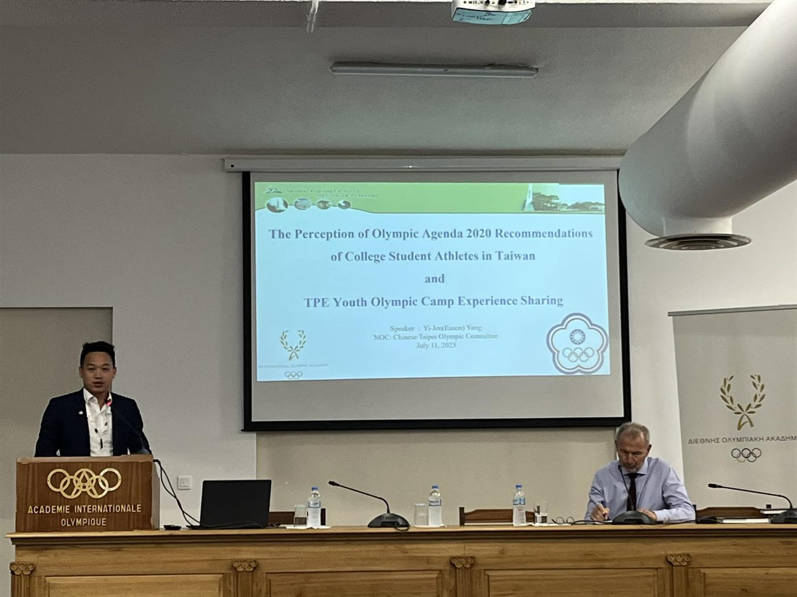
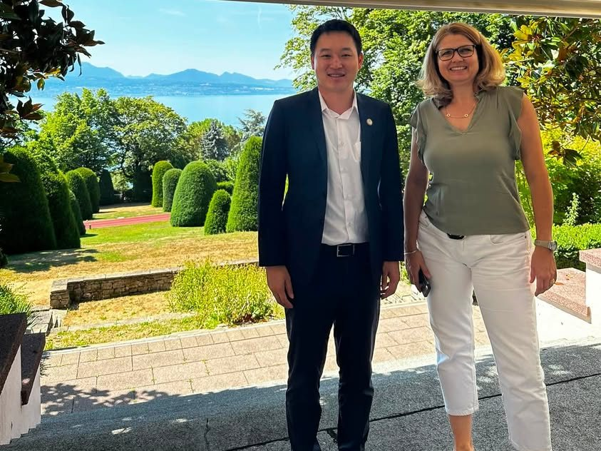
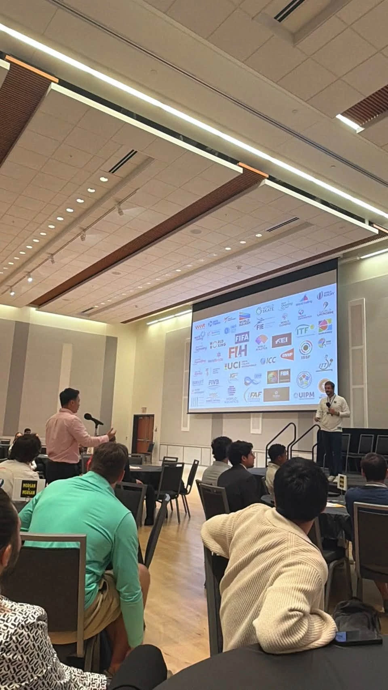
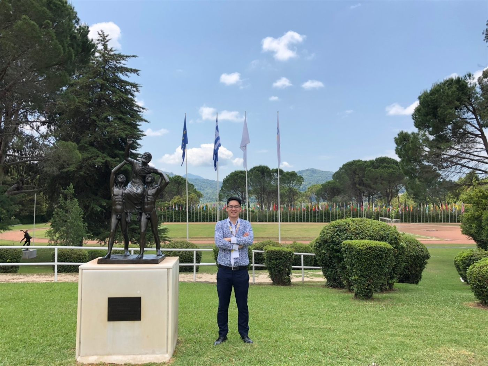
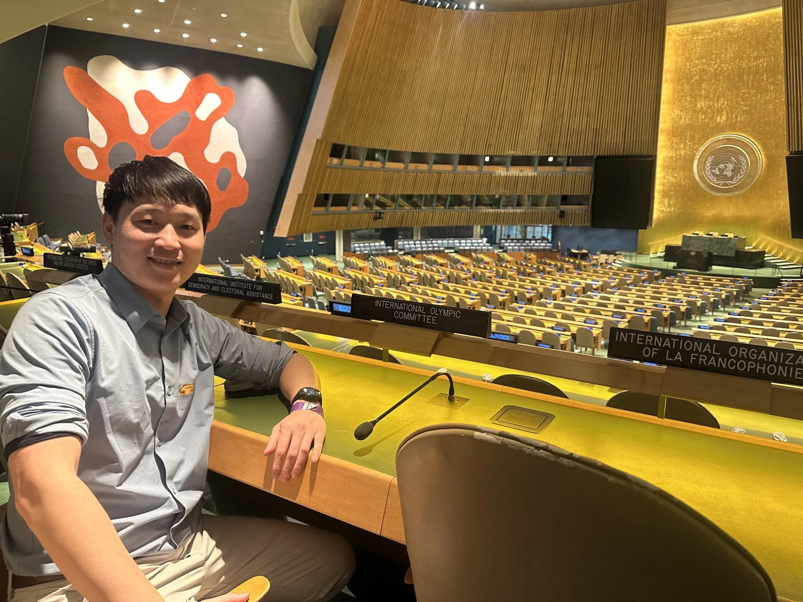
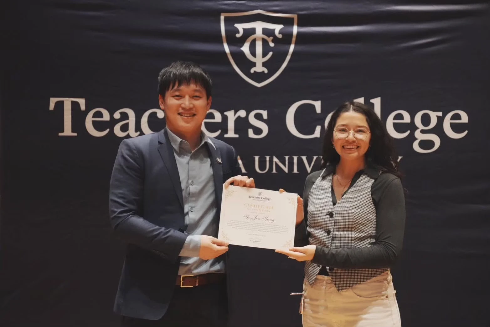
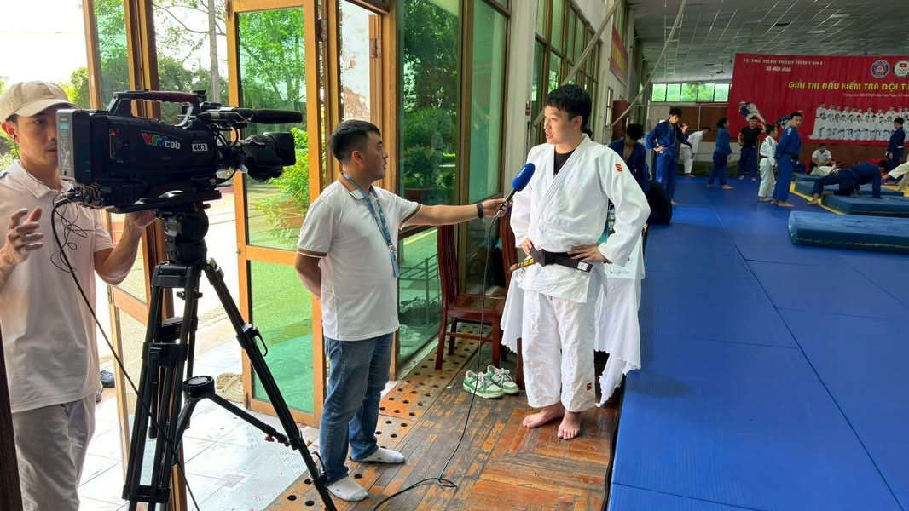
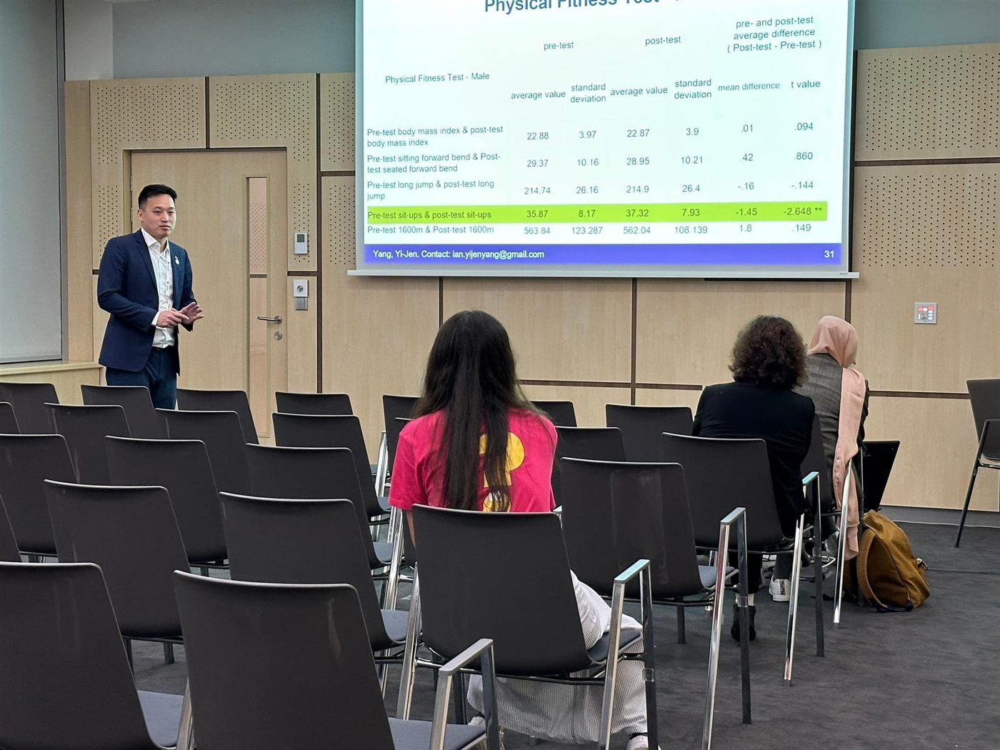

楊懿仁
美國佛羅里達大學（University of Florida）運動管理學系
博士生、研究所獎學金研究員（Graduate Fellow）、研究助理
研究 2028 洛杉磯奧運等大型運動賽會對主辦社區與居民生活品質的影響，以及運動參與、身體活動與健康的關係，和穿戴式裝置判定運動強度的準確度。
赴美前在國立屏東科技大學體育室任教六年，主持國科會與教育部研究計畫，並擔任中華奧林匹克委員會教育委員會委員及國際體育事務人才培育計畫顧問。
最新消息
| 2026 年 11 月 | 於佛羅里達大學運動商業研討會與 LA28 奧運籌委會 Gustavo Costa 交流裁判科技與主辦社區研究。 |
| 2026 年 10 月 | 受邀至美國北卡羅來納州立大學，演講大型賽會遺產。 |
| 2026 年 10 月 | 大學生身體素養與運動團隊參與的研究刊登於 BMC Public Health。 |
| 2026 年 8 月 | 獲佛羅里達大學研究所 Graduate School Opportunity Award，進入運動管理學系博士班。 |
| 2026 年 7 月 | 拜訪瑞士洛桑國際奧會奧林匹克研究中心，受邀加入國際奧林匹克學術社群。 |
| 2026 年 7 月 | 於瑞士洛桑歐洲運動科學學會年會（ECSS）發表沉浸式 VR 運動觀賞研究海報。 |
| 2026 年 7 月 | 於瑞士日內瓦國際自我決定理論研討會發表 VR 運動觀賞持續動機研究海報。 |
| 2025 年 2 月 | 完成美國哥倫比亞大學師範學院 Fulbright EMI 專業師訓。 |
研究方向
大型賽會遺產與奧林匹克研究
2028 洛杉磯奧運主辦社區居民的生活品質、社會資本與韌性；奧林匹克 2020 改革議程與奧林匹克教育。
運動、身體活動與健康
大學生的身體素養、運動團隊參與與規律運動；身體活動與心理健康。
穿戴式科技
腕戴式裝置判定運動強度的準確度，以及體育課導入運動科技的接受度。
代表著作
- Huang, C.-C., Cheng, Z.-Y., Wang, H.-Y., Yang, Y.-J., Lin, L.-H., Chung, F.-I., & Hsu, C.-T. (2026). Perceived physical literacy, sports team participation, and regular physical activity among university students: A national survey study. BMC Public Health. Advance online publication. doi:10.1186/s12889-026-28535-2
- Yang, Y.-J., & Cheng, C.-C. (2023). The perception of Olympic Agenda 2020 recommendations of college student athletes in Taiwan. Diagoras: International Academic Journal on Olympic Studies, 7, 47–61.
- Ho, W.-T., Yang, Y.-J., & Li, T.-C. (2022). Accuracy of wrist-worn wearable devices for determining exercise intensity. Digital Health, 8, 20552076221124393. doi:10.1177/20552076221124393
- 陳伯儀、陳美燕、楊懿仁†（2020）。「2020在即，你準備好了嗎？」臺灣學生運動員對奧林匹克2020改革議題認知之研究。臺灣體育學術研究，68，15–36。
- 楊懿仁、鄭稼棋（2020）。從賽會管理觀點分析2020東京奧林匹克運動會之光與影。人文社會科學研究：教育類，14(4)，55–70。
另有《學校體育》等期刊文章，完整清單見 Google Scholar。† 通訊作者。
研究計畫
| 2025–2026 | 國科會新進人員研究計畫主持人：數位科技時代球迷觀賽模式的轉變，以沉浸式 VR 運動賽事觀賞行為為例（NSTC 114-2410-H-020-016）。 |
| 2024–2025 | 教育部教學實踐研究計畫主持人：心理健康假與體育課（PGE1137013）。 |
| 2023–2024 | 教育部教學實踐研究計畫主持人：適應體育運動精神融入一般體育課（PGE1122599）。 |
| 2022–2023 | 教育部教學實踐研究計畫主持人：運動科技與多元教學方法導入體育課程（PGE1110231）。 |
獲獎與榮譽
| 2026 | 美國佛羅里達大學 Graduate School Opportunity Award |
| 2025 | 獲選教育部與學術交流基金會（Fulbright Taiwan）EMI 海外專業師訓 |
| 2020–2025 | 國立屏東科技大學創新教學優良教師（連續五年） |
| 2023 | 教育部大專優秀教練 |
| 2018 | 臺北市立大學休閒運動學術研討會暨吳經國先生獎學金 優勝論文獎 |
| 2017 | 亞洲運動管理學會（AASM）年會 Certificate of Excellence（最佳發表） |
| 2017 | APEC 婦女與運動國際研討會 論文海報優選 |
| 2014 | 外交部國際青年大使 |
教學經歷
| 2020–2026 | 國立屏東科技大學體育室：助理教授（2025–2026）、講師（2020–2025）。開設運動科學、適應體育、柔道、游泳及全英語授課體育課程。連續五年獲創新教學優良教師。 |
| 2025 | 教育部與學術交流基金會（Fulbright Taiwan）EMI 海外專業師訓，美國哥倫比亞大學師範學院。 |
| 2022–2025 | 國家運動訓練中心：國家代表隊選手學程授課教師（運動教練學、體育運動教學策略、運動訓練法）。 |
| 2019–2020 | 國立臺灣師範大學：兼任講師（普通體育）。柔道課程介紹影片（師大體育室）。另在個人 YouTube 頻道分享柔道技術教學短片，最高觀看次數超過 1.1 萬次。 |
| 2015–2016 | 聖露西亞青年發展暨體育部：體育教師。 |
演講與研討會發表
受邀演講
| 2026 | 美國北卡羅來納州立大學，全球運動課程客座演講（大型賽會遺產）。 |
| 2025 | 學術交流基金會（Fulbright Taiwan）國際雙語教育論壇，受邀講者（高雄）。 |
| 2025 | 國立臺灣體育運動大學通識教育中心「奧林匹克教育與英語力」客座講師。 |
| 2023 | 亞洲奧林匹克理事會（OCA）運動員論壇：中華台北奧林匹克運動發展與台灣青少年奧林匹克體驗營。 |
| 2022 | 國立臺灣師範大學體育與運動科學系，國際體育事務知識校園講座。 |
| 2021 | 日本東京理科大學線上講座「世界各地的學生生活」。 |
| 2020 | 外交部「後疫情時代青年領導力座談會」與談人（全英文），分享體育運動在疫情期間的角色。 |
所有研討會發表（14 篇）
- 2026 年 10 月｜國科會計畫成果（數位科技時代球迷觀賽模式），國科會體育學門研究成果聯合發表會電子海報，國立成功大學。
- 2026 年 7 月｜沉浸式 VR 運動賽事觀賞行為（TAM 與 TPB），第 31 屆歐洲運動科學學會年會海報，瑞士洛桑。
- 2026 年 7 月｜臺灣大學生 VR 運動觀賞的心理需求滿足與持續觀看動機，第 9 屆國際自我決定理論研討會海報，瑞士日內瓦。
- 2025 年 8 月｜心理健康假與體育課，教育部教學實踐研究計畫成果交流會。
- 2024 年 8 月｜適應體育運動精神融入一般體育課，教育部教學實踐研究計畫成果交流會。
- 2024 年 7 月｜運動科技導入臺灣體育課程：科技接受模式與體適能檢測，第 33 屆國際心理學大會口頭發表，捷克布拉格。
- 2023 年 8 月｜日本滑雪觀光多角化：以白馬山谷為例（與鄭稼棋合著），第 19 屆亞洲運動管理學會年會海報，馬來西亞古晉。
- 2023 年 8 月｜運動科技與多元教學方法導入體育課程，教育部教學實踐研究計畫成果交流會。
- 2023 年 7 月｜臺灣大專學生運動員對奧林匹克 2020 改革議程建議的認知，第 28 屆歐洲運動科學學會年會口頭發表，法國巴黎。
- 2023 年 5 月｜年輕消費者個人特質與醫美消費意願（共同作者），第 24 屆永續發展管理研討會口頭發表，國立屏東科技大學。
- 2021 年 5 月｜後疫情時代學生運動員對奧林匹克 2020+5 改革議題的政策認知，臺灣運動管理學會年會海報（線上）。
- 2018 年 6 月｜臺灣學生運動員對奧林匹克 2020 改革的認知，臺北市立大學休閒運動學術研討會（吳經國先生獎學金論文競賽），優勝論文獎。
- 2017 年 10 月｜臺灣男女學生運動員的性別平等意識，APEC 婦女與運動國際研討會海報，臺北，論文海報優選。
- 2017 年 7 月｜臺灣大專學生運動員對奧林匹克 2020 改革議程建議的認知（與陳美燕合著），第 13 屆亞洲運動管理學會年會口頭發表，韓國平昌，Certificate of Excellence。
服務與奧林匹克運動
中華奧林匹克委員會
- 教育委員會委員（2022–2025）。
- 共同創辦並主持台灣青少年奧林匹克體驗營，2022–2024 年共辦理四屆（2022 年 1 月、2022 年 10 月奧會百年營、2023、2024）。
- 國際體育事務人才培育計畫顧問（2023–2024）；培訓營小組導師（2022–2025）、課程講師（2024）。
- 擔任中華奧會主席隨行秘書，赴希臘國際奧林匹克學院簽署合作備忘錄（2023）。
國際奧林匹克學院（希臘古奧林匹亞）
- 獲中華奧會推薦出席第 14 屆高等體育院校教育工作者國際研討會（2023）。
- 獲中華奧會推薦出席第 59 屆國際青年研討會（2019）。
期刊編輯與審查
- 《屏東科大體育學刊》主編（2020–2024）、執行編輯（2024–2026）。
- 《休閒觀光與運動健康學報》編輯委員（2023–2025）。
- 審查委員：《臺灣體育運動管理學報》、《運動教練科學》、《臺大體育學報》、《休閒觀光與運動健康學報》；臺灣運動生物力學學會研討會評審（2024）。
政府、學校與社會服務
- 教育部青年發展署「青年百億海外圓夢基金」審查輔導委員（2025–2026）。
- 外交部國際青年大使（2014）。
- 國立屏東科技大學體育室場地設備組組長（2022–2024、2025–2026）。
教練與裁判
- 屏科大跆拳道、柔道、角力、空手道、籃球、游泳校隊教練（2020–2026）；帶隊於 2024 全國大專校院運動會獲 4 金 2 銀 2 銅。
- 國立臺灣師範大學柔道隊助理教練（2016–2020）。
- 中華民國柔道總會 A 級裁判、柔道教練；曾擔任全國運動會、全國中正盃、全國柔道錦標賽等全國賽事，以及縣市級賽事裁判。柔道黑帶四段。
- 擔任全國柔道賽事轉播講評（含 2018 全國中正盃）；東京奧運期間開設免費線上柔道運動鑑賞工作坊。
從運動員到研究者
我是家中第一代大學生，在柔道場上長大。選手時期曾獲亞洲第三名、全國冠軍，至今仍是柔道黑帶四段，並擔任全國賽事裁判與賽事播報。運動帶我進入國立臺灣師範大學體育學系，成為體育教師，也帶我到加勒比海的聖露西亞，在當地教了一年體育。
回到台灣後，我與中華奧會合作推動奧林匹克教育，赴希臘古奧林匹亞的國際奧林匹克學院研習，並在國立屏東科技大學任教六年，教課、帶校隊，也主持教學與研究計畫。一路上，運動、求學與服務也帶我走過超過 35 個國家與地區，從外交部國際青年大使出訪時在約旦難民營的演出，到 2016 年里約奧運的現場。
在這些場景裡，我一次又一次看到運動如何改變一個人、一所學校，甚至一個社區。這讓我一直在想：運動和身體活動究竟如何讓人過得更好？又該怎麼好好衡量？2026 年我來到佛羅里達大學運動管理學系攻讀博士，希望用研究回答這個問題，讓更多人因為運動而活得更健康、更好。
國際足跡
我比賽、讀書、教學、發表研究、學術交流與參與奧林匹克運動的地方。點選圓點可看說明。
活動剪影









媒體報導
| 2024 年 9 月 | 2024 奧林匹克體驗營：以奧林匹克精神與科技創新探索運動的世界。屏科大新聞（英文）。 |
| 2024 年 7 月 | 奧運解析／楊勇緯為何無緣獎牌？專家解析關鍵 PLAY「非典型內腿」。NOWnews 今日新聞，以賽評身分受訪。 |
| 2022 年 10 月 | 中華奧會百年，屏科大舉辦第二屆奧林匹克體驗營。屏科大新聞（英文）。 |
| 2022 年 4 月 | 鏡新聞線上專訪：東京奧運期間舉辦柔道運動鑑賞線上工作坊（影片）。 |
| 2022 年 1 月 | 奧運銀牌選手到屏科大「2022 青少年奧林匹克體驗營」分享。屏科大新聞（英文）。 |
| 2020 年 7 月 | 學習柔道最好的方式「跟對手一起變強」。全國廣播 FM106《空中荃運會》專訪，Yahoo 奇摩新聞轉載。 |
| 2020 年 6 月 | 不怕畢業就失業！體育系學生找出路。華視新聞。 |
| 2020 年 5 月 | 台師大首創線上柔道課 學生奇招百出。自由時報。 |
| 2018 年 6 月 | 榮獲吳經國先生獎學金論文競賽論文獎。臺灣師範大學運動休閒與餐旅管理研究所。 |
| 2015 年 11 月 | Taiwanese T-T Coach Here。聖露西亞《The Voice》報導。 |
| 2014 年 1 月 | 負傷上陣單臂奪金 師大柔道隊楊懿仁展過人意志。師大新聞，另有影片報導。 |
履歷
下載完整履歷（英文 PDF），含所有著作、發表、計畫、獎項與服務。